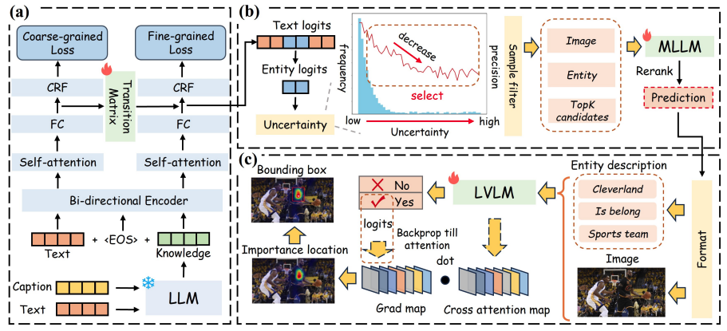
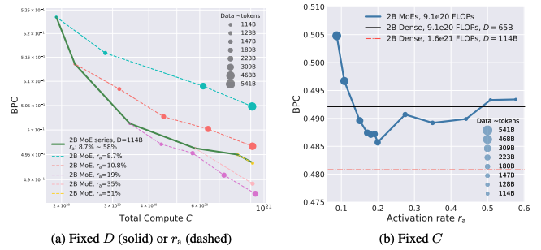
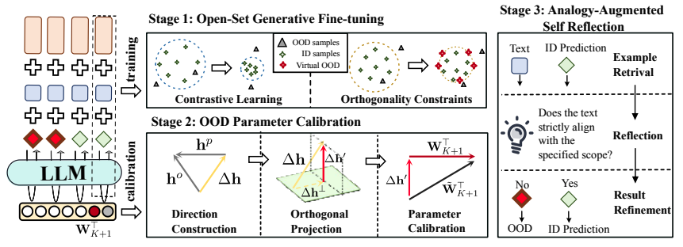
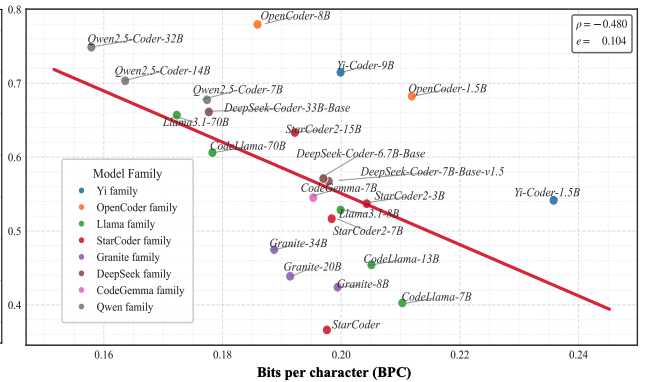
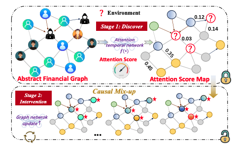

|
Ziqi Wang (王梓齐)
I am a second-year master student at School of Artificial Intelligence and Data Science, University of Science and Technology of China, advised by Tong Xu and Enhong Chen.
|

|
Projects / ResearchI'm interested in LLM pre-training, reasoning, long-context, multimodal, information extrcation, image generation model. |
|
Step2-mini
Stepfun Team (Core contributor) A lightweight LLM designed with innovative attention mechanisms for fast online response. |
|
|  |
Granular Entity Mapper: Advancing Fine-grained Multimodal Named Entity Recognition and Grounding
Ziqi Wang, Chen Zhu, Zhi Zheng, Xinhang Li, Tong Xu, Yongyi He, Qi Liu, Ying Yu, Enhong Chen Findings of the Association for Computational Linguistics: EMNLP 2024, 2024 A novel method for fine-grained text entity recognition with simultaneous localization of corresponding image entities. |
|  |
Can Mixture-of-Experts Surpass Dense LLMs Under Strictly Equal Resource?
Houyi Li, Ka Man Lo, Ziqi Wang, Zili Wang, Wenzhen Zheng, Shuigeng Zhou, Xiangyu Zhang, Daxin Jiang Are there sparse regions where MoE (Mixture of Experts) surpasses dense models under the same computational budget? |
|  |
Beyond the Known: An Unknown-Aware Large Language Model for Open-Set Text Classification
Xi Chen, Chuan Qin, Ziqi Wang, Shasha Hu, Chao Wang, Hengshu Zhu, Hui Xiong A novel method for Open-Set Text Classification using LLM uncertainty estimation and mitigation |
|  |
Is Compression Really Linear with Code Intelligence?
Shijie Xuyang, Xianzhen Luo, Tianhao Cheng, Zheng Chu, Houyi Li, Ziqi Wang, Siming Huang, Qingfu Zhu, Qiufeng Wang, Xiangyu Zhang, Shuigeng Zhou, Wanxiang Che Accurately measuring code intelligence between base models and chat models is critical. |
|  |
Cat-gnn: Enhancing credit card fraud detection via causal temporal graph neural networks
Yifan Duan, Guibin Zhang, Shilong Wang, Xiaojiang Peng, Ziqi Wang, Junyuan Mao, Hao Wu, Xinke Jiang, Kun Wang A novel method for credit card fraud detection via causal temporal graph neural networks. |
Internship Experiences |

|
Baidu | Ernie Team Research Intern (Ernie Star) April 2025 - Now Supervised by Jing Liu , Haifeng Wang Happy to join Ernie in exploring the reasoning mechanisms of large language models! |

|
Stepfun | Foundation Team Pretraining Algorithm Intern August 2024 - April 2025 Supervised by Houyi Li , Xiangyu Zhang Hands-on full-stack LLM training contains: data engine, pretraining, post-training, long-context reasoning, large-scale distributed training! |

|
Iflytek | Core R&D Platform Algorithm Intern December 2023 - March 2024 Supervised by Haochen Jiang, Shan He Some interesting experiments on conditional image generation for real-world online applications! |

|
Boss Zhipin | CSL Lab Research Intern April 2023 - August 2023 Supervised by Chen Zhu , Hengshu Zhu Beginning my research journey with a focus on robustness in Text-to-Image Diffusion Models. Grateful for the cultivation of my research insights! |
Educational Experiences |

|
University of Science and Technology of China September 2023 - Now Master in Artificial Intelligence and Data Science |
|
|
University of Science and Technology of China September 2019 - July 2023 Bachelor of Artificial Intelligence and Data Science |
Selected Awards
|